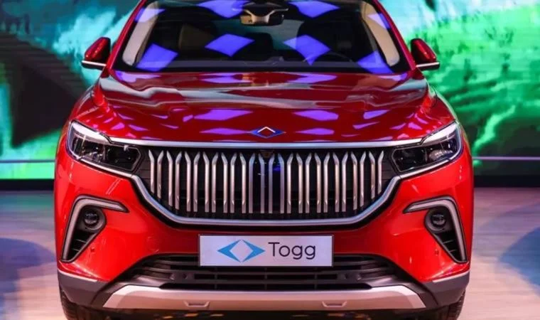

Kamu bankaları Togg alacaklara kredi verecek
AKP'li Cumhurbaşkanı Recep Tayyip Erdoğan, kamu bankalarının Togg alacaklara kredi vermek için çalışma yaptığını söyledi ve "Detayları bugün Manisa'da açıklayacağım" dedi.

Togg ve Farasis Energy'nin yüzde 50-50 ortak girişimiyle 27 Eylül 2021'de kurulan Siro’nun Gemlik’teki Teknoloji Kampüsü’ndeki batarya üretim tesisi için temel atma töreni gerçekleştirildi.
Burada konuşan Cumhurbaşkanı Recep Tayyip Erdoğan, kamu bankalarının TOGG alacaklara kredi vermek için çalışma yaptığını söyledi ve “Detayları bugün Manisa’da açıklayacağım” dedi.
AKP'li Cumhurbaşkanı Recep Tayyip Erdoğan’ın Manisa’da açıklayacağı nihai kredi vade süresinin 36 ay olacağı, bu kredinin TOGG’un yüzde 50’sine verileceği belirtiliyor.
Kısa süre sonra Türkiye’den sipariş veren ilk kullanıcıların araçları teslim edilecek. Araçlar Tesla’nın Berlin’de açtığı Giga Factory‘den geliyor ve bu fabrika haftalık üretim kapasitesini 5000 araç seviyesine çıkardı. Şu anda bir Tesla siparişi vermek için internet sitesinden kendinize uygun aracı oluşturmanız ve 10 bin TL ön sipariş bedeli ödemeniz yeterli. Sıra size geldiğinde iletişime geçiliyor.